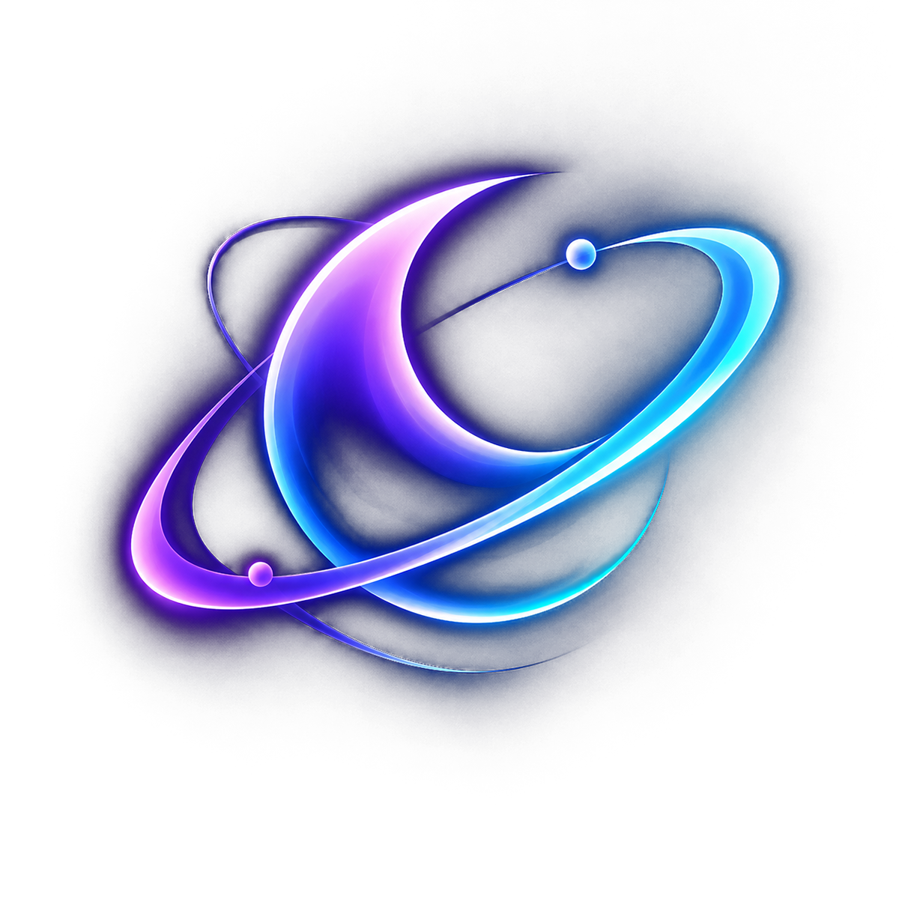
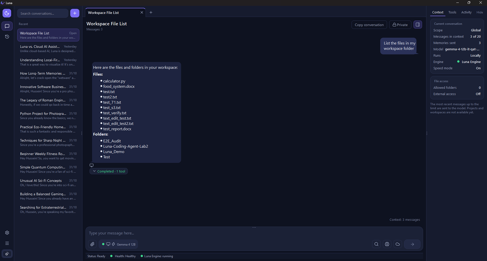
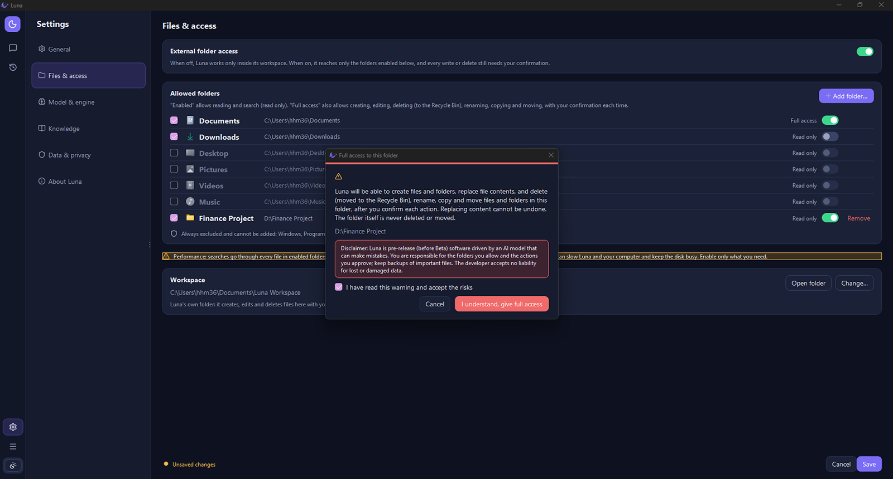

المحادثات
مساحة مرنة لتنظيم محادثاتك مع الذكاء الاصطناعي.

مساعد ذكاء اصطناعي لسطح المكتب، صُمم ليمنحك الخصوصية والتحكم والإنتاجية، مع أولوية التشغيل المحلي.
تجمع لونا بين الذكاء الاصطناعي المحلي ومساعدة الملفات والذاكرة الشخصية والذكاء السحابي الاختياري، ضمن تجربة واحدة على Windows.

مساعد لسطح المكتب يساعدك في محادثاتك وملفاتك ومعرفتك الشخصية.
مساحة مرنة لتنظيم محادثاتك مع الذكاء الاصطناعي.
ابحث عن ملفاتك ونظّمها وتعامل معها بعد تأكيدك.
تتذكر لونا المعلومات عندما تطلب منها ذلك صراحةً.
ابحث داخل المستندات المدعومة واعمل معها.
شغّل النماذج المحلية على جهازك.
اختر متى تريد استخدام الخدمات السحابية الاختيارية.

تحدث بالإنجليزية أو العربية.

ابحث عن الملفات وأدرها مع ضوابط الصلاحيات.

تحكم في الوصول إلى ملفاتك وبياناتك.

ابحث في معرفتك الشخصية ومستنداتك المدعومة.
تعتمد لونا التشغيل المحلي أولاً. تتطلب عمليات الملفات تأكيدك، وتخضع صلاحيات المجلدات للتحكم، ويبقى استخدام السحابة اختيارياً.
ابدأ بالمعالجة المحلية، واختر المعالجة السحابية عندما تحتاج إليها.
كل شيء يعمل على جهازك عبر محرّك لونا، ويعمل دون إنترنت بعد تثبيت النموذج.
استخدم Google Gemini أو OpenAI بمفتاح API الخاص بك، ويُحفظ المفتاح بأمان على جهازك.
المحلي والسحابة معًا، بأحد أسلوبين:
تعمل لونا مع المحرّكات والخدمات التالية. لا تمرّ طلبات الذكاء الاصطناعي عبر أي خادم تابع للونا: النماذج المحلية تعمل على جهازك، ويُتصل بمزوّدي السحابة مباشرةً بمفتاح API الخاص بك.
خصوصية بحكم التصميم، وتعمل دون إنترنت بعد تثبيت النموذج.
اختياري. استخدم مفتاح API الخاص بك، ويُحفظ في مدير بيانات اعتماد Windows.
تُضاف مزوّدات أخرى تدريجيًا، بعد مراجعة سياسة الخصوصية والشروط لكل منها. أسماء المزوّدين وعلاماتهم التجارية ملك لأصحابها، ولونا مشروع مستقل غير تابع لهم ولا مدعوم منهم.
إمكانات مستقبلية ضمن منظومة لونا. هذه الميزات غير متاحة في الإصدار الحالي.
قريباً
قريباً
قريباً
قريباً
قريباً
قريباً
يمكن للمحادثات باستخدام نموذج محلي أن تعمل دون إنترنت بعد تثبيت النموذج.
لا. المعالجة السحابية اختيارية وتخضع لتحكمك.
يُوصى بنظام Windows 11 (64-بت). نظام Windows 10 غير مدعوم رسميًا في هذا الإصدار التجريبي: الذكاء السحابي يعمل عليه في اختباراتنا، لكن قد لا تعمل بعض الميزات كما هو متوقع.
ملف التثبيت غير موقّع رقميًا بعد، لذلك قد تظهر رسالة «Windows protected your PC». اضغط More info ثم Run anyway، ولا تفعل ذلك إلا مع الملفات المنزّلة من هذه الصفحة أو من صفحة الإصدارات الرسمية.
نفّذ هذا الأمر في PowerShell داخل مجلد الملف المنزَّل:
Get-FileHash .\LunaSetup-0.1.1.exe -Algorithm SHA256
يجب أن تطابق النتيجة هذه البصمة (SHA-256) تمامًا:
6dc247705961fc37eda70aa36d2582e7e8d7cad245d6c8102957072ea09c2028
استخدم رابط «الإبلاغ عن مشكلة» أسفل هذه الصفحة، واقرأ دليل المجرّبين أولًا. أمّا المشكلات الأمنية فيجب الإبلاغ عنها بشكل خاص، وليس في بلاغ عام.
الإصدار التجريبي العام الأول من لونا متاح الآن. حمّلها وجرّبها وشاركنا ملاحظاتك.
تحميل لونا لنظام Windows